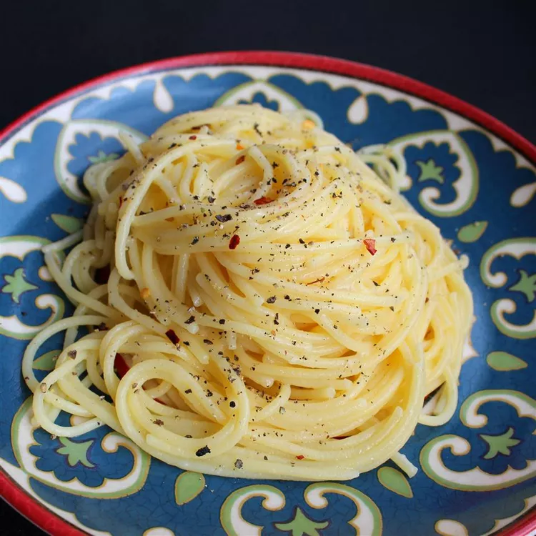

Cacio e Pepe

Description
Cacio e Pepe is a quick, simple, and delicious pasta dish. The main 2 ingredients that make up the flavor of this dish is cheese and pepper, hence its name in Italian, Cacio e Pepe.
Ingredients
- 1 pound spaghetti
- 6 tablespoons olive oil
- 2 cloves garlic, minced
- 2 teaspoons ground black pepper
- 1 3/4 cups grated pecorino romano cheese
Steps
- Bring a large pot of water to boil. Once boiling, add salt and spaghetti. Cook spaghetti according to the packaging. Once cooked, reserve 1 cup of pasta water and drain spaghetti.
- Heat a large skillet over medium heat and add olive oil. Add garlic and black pepper and cook until fragrant.
- Add cooked spaghetti, pecorino romano cheese, and 1/2 cup of pasta water. Stir until cheese is melted. Add more pasta water 1 tablespoon at a time as needed to desired consistency and serve.
Check out these other recipes